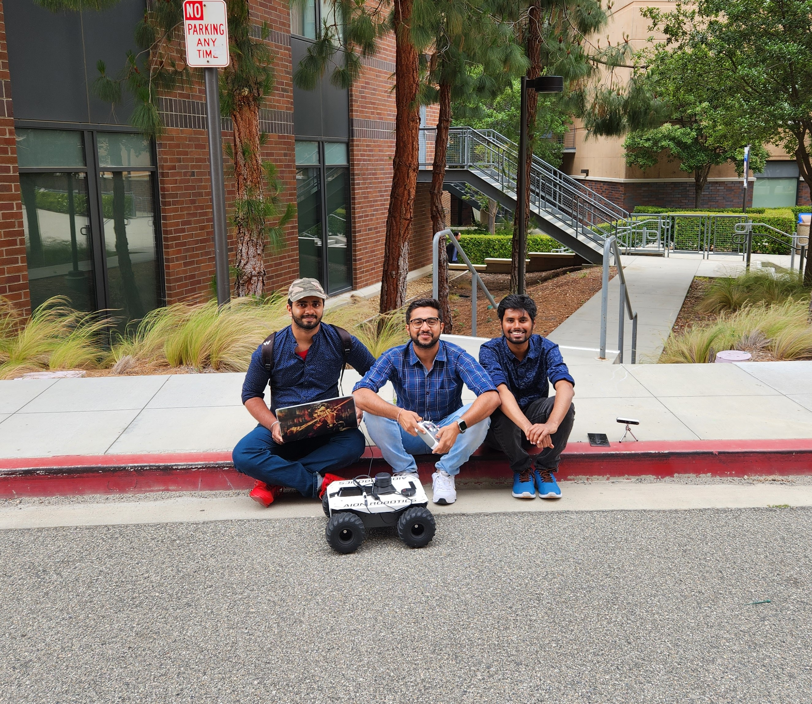

To explore more please visit our GitHub repo,
click here.
YouTube Videos
Capstone Final Presentation
Fast Forwarded Navigation Result
Full Video of Navigation Result
Semantic Segmentation
20 waypoints with Object Detection
Wave points Attempts
Object Detection
Object Avoidance Initial
Object Detection Attempt
Fail Attempt
Failed Attempt
Dancing Rover
Random Movements
Rover Movements
Object Detection

Problem Statement
Last-mile delivery challenges in urban environments include traffic congestion, delays, and environmental impacts, which hinder efficient operations.
Existing solutions like rovers and drones face limitations in navigating rough terrain, stairs, and urban complexities, and have restricted operational ranges.
A comprehensive solution integrating the strengths of both rovers and drones is needed to address these challenges, ensuring adaptable, safe, and efficient deliveries.
Project Overview
The project focuses on processing data streams from various sensors to command a rover for autonomous movement.
Utilizes the Pixhawk Cube as a flight controller running Ardupilot software, receiving inputs from a Jetson Nano companion computer via Dronekit-Python API and MAVLink-MAVProxy protocol.
Integrates sensors like the Intel Realsense D455 depth camera and Slamtec RPLiDAR A3 with ROS on the Jetson Nano for navigation, implementing advanced algorithms for data processing and fusion.
Employs techniques like Semantic Segmentation, Object Detection, and Extended Kalman filters to maneuver the rover, using OpenRouteService API for waypoint navigation.
Hardware
1. Pixhawk Cube (Flight Controller)
The Pixhawk Cube is a control device for unmanned vehicles, guiding them and processing sensor information.
It uses built-in sensors to understand the vehicle's location and surroundings.
The Cube turns navigation commands into specific motor movements for accurate and autonomous travel.
2. Here2 (GPS Receiver)
A GPS receiver is essential for autonomous robots, providing accurate location data for precise navigation on Earth.
It allows for route planning and real-time position updates, essential for efficient and reliable autonomous movement.
The Here2 GPS receiver offers high precision, utilizing multiple satellite systems for centimeter-level location accuracy.
3. Jetson Nano
The Jetson Nano, serving as a Companion Computer, handles complex tasks like AI processing, enhancing the Pixhawk's basic control functions.
It's a powerful, small-sized computer designed for AI and robotics, supporting advanced neural networks and deep learning.
With its high computational power and low power consumption, the Jetson Nano is ideal for intensive tasks in autonomous systems.
4. Slamtec RPLiDAR A3
LiDAR sensors, like the Slamtec RPLiDAR A3, are key in robotics for accurate environment mapping and navigation.
They excel in obstacle detection and safety, with the RPLiDAR A3 offering a balance of range, accuracy, and affordability.
Its 360-degree field of view and rapid scanning make it ideal for autonomous systems, particularly in cost-sensitive applications.
5. Intel RealSense D455 Depth Camera
The camera in our system is integral for perception, providing essential visual data for the rover's decision-making processes.
Utilizing different types like RGB, tracking, and depth cameras, it captures detailed environmental information for various robotic tasks.
The Intel RealSense D435 camera combines depth sensing and high-resolution imagery, aiding in precise navigation and object detection.
Software
1. Mission Planner
Mission Planner is a ground control software for ArduPilot vehicles, offering tools for configuration, planning, and monitoring.
It provides an intuitive interface for setting up missions, calibrating sensors, and updating firmware within a Windows environment.
The software supports real-time telemetry, waypoint creation, and automated mission execution for effective vehicle management.
2. OpenRouteService API
OpenRouteService API, based on OpenStreetMap, provides diverse routing solutions for different transportation modes including driving and cycling.
Chosen for its accuracy, free usage, and unlimited API calls, it effectively generates waypoints for navigation in varied environments.
It offers features like geocoding, reverse geocoding, and folium maps for comprehensive route planning and spatial analysis.
3. Semantic Segmentation
Semantic segmentation models analyze camera feeds to classify objects and surfaces, enhancing the rover's environmental understanding.
The camera's depth data is crucial for curb detection and, combined with LiDAR, helps construct a comprehensive 3D map for navigation.
These models aid in real-time path planning by differentiating between traversable and non-traversable areas, ensuring safe navigation.
Results
Our advanced rover system boasts an impressive capability to accurately detect objects positioned ahead of it, facilitating intelligent decision-making for obstacle avoidance.
Leveraging this capability, it can dynamically maneuver towards the nearest path, be it on the left or right, ensuring seamless navigation in complex environments.
Moreover, the rover diligently adheres to a predetermined list of waypoints, meticulously following its navigation path with precision and reliability.
By seamlessly integrating object detection, adaptive path selection, and waypoint-guided navigation, our rover consistently reaches its desired end goal, making it a highly professional and efficient solution for a wide range of applications.
The rover "Agni" employs semantic segmentation as a key navigational tool to ensure adherence to the road while avoiding off-road areas like grass.
This advanced technique involves labeling various segments of the road environment, where each label is assigned a unique numerical identifier.
These identifiers are crucial for the rover's understanding and interpretation of its surroundings.
Consequently, Agni is able to autonomously navigate by processing these labels, distinguishing between different areas such as the road and grass, thereby facilitating effective and safe autonomous navigation.
AGNI completing the navigation for its path trace and arriving to its end point
AGNI driving autonomously at the UCI campus
AGNI tracing its path on the road and staying away from the grass


.jpg)
.jpg)
.png)